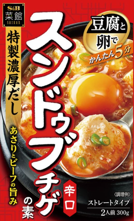
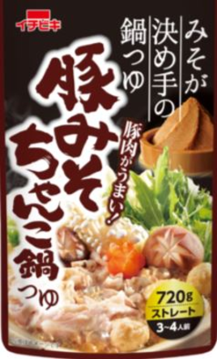

Yummy
-Evaluation of Nabe Soup Base and Evaluation of Nabe Soup Base×Ingredients-
- ■Evaluation Criteria (*Would I recommend it to my past self? That’s super important)
- 5.0 God
- 4.5 I’d absolutely recommend it to my past self. I definitely want to eat it again.
- 4.0 I’d recommend it to my past self. I want to eat it again.
- ----------------------------------The 4.0 Wall ↑ Beyond the high bar of just being pretty good, do I want to eat it again?"
- 3.5 pretty good.
- 3.0 Average.
- 2.0 Not tasty.
- 1.0 Terrible.
- ■Three Secret Rules for Enjoying Hot Pot Deliciously
- ① Green onion, cabbage (or Chinese cabbage), and tofu are the holy trinity. Simple, essential, and the best combo. Bad meat can ruin the taste—try it once without meat first.
- ② Smaller ingredients taste better. Try cutting them a bit finer.
- ③ When eating, put down your phone and turn off the TV. Focus on the food and relax. Eating alone is highly recommended too.
- Akakara (Ichibiki)

- Sesame Soy Milk Hot Pot Soup Base (Mizkan)

- Sundubu Jjigae (S&B)

- Kimchi Hot Pot Soup Base (Ebara)

- Sundubu Jjigae Soup Base (Marudai Foods)

- Lovers Spicy Delicious Sauce (Mizkan)

- Chicken Broth Umashio 7 Pack (Ajinomoto)

- Pork Bone Soy Sauce (Mizkan)

- Pork Miso Chanko Hot Pot Soup (Ichibiki)

- Gifu Tanmen Supervised Salt Tanmen Hot Pot Soup
(Sugakiya)
- Local Chicken Broth Salt Hot Pot Soup (Yamaki)

- Petit Hot Pot Tantan Sesame Hot Pot 40g×4 pcs
(Ebara)
- ★★★★⋆ (4.5)
- ★★★★ (4.0)
- ★★★⋆ (3.5)
- ★★★⋆ (3.5)
- ★★★⋆ (3.5)
- ★★★⋆ (3.5)
* If using the best method for Abura-soba
then 4.0
- ★ (1.0)
- ★★★⋆ (3.5)
- ★★★⋆ (3.5)
- ★★★⋆ (3.5)
* Under review. Could be 4.0
- ★★★⋆ (3.5)
- ★★ (2.0)
-
Green onion × Cabbage × Tofu
→★★★★⋆ (4.5)
× Add Yakisoba
→★★★★ (4.0)
× Add Udon
→★★★★ (4.0) * Might be 4.5. Under review.
-
Green onion × Cabbage × Tofu
→★★★★ (4.0)
-
Green onion × Cabbage × Tofu
→★★★⋆ (3.5)
× Add Raw Egg
→★★★⋆ (3.5)
-
Green onion × Tofu
→★★★⋆ (3.5)
Add Yakisoba
→★★★⋆ (3.5)
-
Tofu
→★★★⋆ (3.5)
Add Yakisoba
→★★★⋆ (3.5)
-
Green onion × Tofu
→★★★⋆ (3.5)
Add Yakisoba
→★★★★ (4.0 * If using the best method)
-
Green onion × Tofu
→★ (1.0)
Rice Porridge (Add Rice)
→★★ (2.0) * Initial taste was 3.5
-
Green onion × Cabbage × Tofu
→★★★⋆ (3.5)
Add Yakisoba
→★★★⋆ (3.5)
-
Green onion × Enoki mushrooms
→★★★⋆ (3.5)
Rice Porridge (Add Rice)
→★★★⋆ (3.5) * Might be 4.0 next time. Under review.
-
Green onion × Tofu × Chinese cabbage
→★★★⋆ (3.5) * Might be 4.0 next time. Under review.
Add Udon
→★★★⋆ (3.5)
-
Tofu × Chinese cabbage
→★★★⋆ (3.5)
Add Yakisoba
→★★★⋆ (3.5)
-
Green onion × Udon
→★★ (2.0)
- Seriously damn delicious!!!
I would highly recommend this to my past self. The best spicy flavor so far.
The super simple combo of green onion, cabbage, and tofu is perfect. Chinese cabbage works as a substitute for cabbage.
If you add about 30 yen worth of yakisoba noodles, somehow it turns into ramen and tastes insanely good.
- Tasty.
I can recommend this to my past self.
A comforting flavor. Recommended when feeling down.
A reassuring taste. Makes me want to buy it again.
- Pretty good.
I think it tastes better without adding raw egg.
- Pretty good.
The ratio of soup base to water is 1:2.
The base contains 300ml, and you add 600ml water, so you get a large 900ml serving.
- Pretty good.
It said “No.1” on it, but it’s Pretty good, nothing more.
- astes great when eaten as oil noodles.
Using the best method, it scores 4.0.
Really delicious.
The best way is to cut green onions, add 50ml of liquid and 100ml water, then add yakisoba noodles and Wait until all the soup has evaporated.
As a hot pot, it’s Pretty good.
- The worst ever.
The smell is unbearable.
It kills the appetite.
The smell even comes back when eating hot pot.
The end.
- Pretty good.
- Pretty good.
The rice porridge might reach 4.0 next time I try it.
Needs further review.
I haven’t tried adding pork belly yet, so I might buy it again.
- This might be a hit.
I’ll order again.
Needs further review.
It was rated 3.5, but might be 4.0 next time.
Definitely felt the vegetables were tasty!
- Pretty good.
- Not tasty.
The smell is also bad.
The cubes themselves might be bad.
- On 25/5/9, 25/5/11, and 25/5/12, ate one packet for the 1st time.
On 25/7/7 and 25/7/8, ate one packet for the 2nd time.
*All products counted from 25/5/7.
- On 25/5/7 and 25/5/8, ate one packet (1st time).
- On 25/5/14, ate one packet (1st time).
- On 25/5/16, 25/5/17, 25/5/18, 25/5/21, and 25/5/22, ate one bottle (300ml base) (1st time).
- On 25/6/5 and 25/6/6, ate one packet (1st time).
- On 25/6/12, 25/6/16, 25/6/17, 25/6/18, and 25/6/20, ate one packet (1st time).
- On 25/6/20, used 2 cubes (1st time - don’t want to eat any more, so finished).
- On 25/6/23 and 25/6/24, ate for the 1st time. Ate again on 25/7/4 (2nd time).
- On 25/7/1 and 25/7/3, ate one packet (1st time).
- On 25/7/8 and 25/7/9, ate one packet (1st time).
- On 25/7/9, ate one packet (1st time).
- On 25/7/16, used one cube (1st time - don’t want to eat any more, so finished).